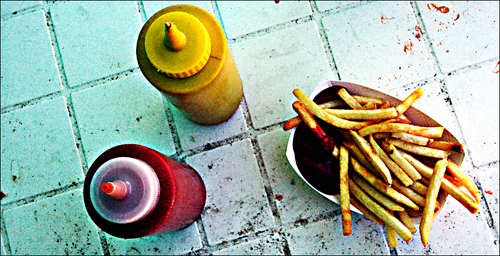

Frittieren: Open Source

Heute möchte ich mein Wort an all jene richten die zwar gerne Krapfen, Donuts und Pommes essen aber nicht gewillt sind ihr hart erarbeitetes Geld Branchenriesen wie Krups&Co in den Hals zu schleudern.
Anlass für diese Überlegung war die Renovierung meiner Küche, bei der ich auch wieder über meine alte Fritteuse stolperte. Ich muss sagen, ich frittiere gerne, aber eben auch nicht so oft, dass ich den alten Fettbackautomaten ständig bereit in der Küche stehen habe. Also versauert er die meiste Zeit des Jahres oben auf dem Küchenschrank, wo er mir nicht ständiog ins Auge fällt.
Frittiere ich dann doch einmal, läuft das nach dem immer gleichen Schema ab:
Fritteuse runterholen, reinschauen, ärgern dass das Fett natürlich ranzig geworden ist, den ganzen Schmodder rauskratzen und die Fritteuse mühsam mit nicht zuviel Wasser (sonst leidet die Elektrik, und evtl darauf noch der Benutzer) saubermachen, feststellen, dass nicht genug frisches Frittierfett da ist, losstratzen und Frittierfett kaufen und losbraten. Nach dem Frittieren die Fritteuse noch einen Tag lang in der Küche stehen lassen, da das Fett ja noch flüssig ist und einem sonst alles beim auf den Schrank stellen entgegenschwappen würde...
oder...
Ich lasse den ganzen krempel und mache Nudeln!
Doch damit Schluss. Wie bescheuert ist man eigentlich? Nur weil irgendwann in den 50er Jahren im Rahmen der umgehenden Elektrifizierung des deutschen Volkes die Küchenindustrie beschlossen hat, dass man Fritteusen zum frittieren braucht, ist das noch lange kein Grund sich nicht auf alte Werte zu besinnen.
Viel schneller und einfacher ist es doch normales Pflanzenöl (meinetwegen auch Frittierfett) zu nehmen, in einen ausreichend großen Topf zu packen, das ganze zu erhitzen und fröhlich drauf loszufrittieren. Ist der Frittiervorgang abgeschlossen, stellt man die Flamme aus, holt den Krempel mit ner Schaumkelle aus dem Fett und futtert fröhlich drauf los. Nach dem Futtern ist das Fett höchstens noch 50°C heiss, und man kann es lässig durch ein Sieb in eine ausreichend große Tupper-Box gießen. Deckel drauf, fertig. Den Topf danach normal abspülen und das Fett an einen lichtgeschützten Ort stellen.
Vorteile:
- Sollte einen irgendwann mal wieder die Frittierlust packen, kann man das Fett einfach und schnell aus der Plastikbox in einen Topf packen (und sich ziemlich sicher sein, dass es noch nicht ranzig ist, da es luftgeschützt aufbewahrt wurde. Anders als in der Fritteuse).
- Sollte das Fett wider Erwarten nun doch schlecht geworden sein, kann man die Schlacke einfach in den Müll packen, und die Plastebox in die Spülmaschine stecken.
- Man hat wieder etwas Platz gewonnen, da man sich eines doofen Elektroartikels entledigt hat.
Sollte nun irgendjemand der Meinung sein, dass Frittieren ohne Fritteuse mehr stinkt als mit, dann kann ich demjenigen nur schallend entgegnen: Mitnichten mein Freund! Oder hat schonmal irgendjemand ernsthaft den Fettfilter (der kein Geruchsfilter ist) der Fritteuse gewechselt? Eben. Frittieren stinkt immer.
Ach ja, zur Sicherheit ist noch zu sagen, dass man auf jeden Fall in der Nähe des Fetts bleiben sollte so lange es erhitzt wird. Denn schneller als erwartet kann es beginnen zu rauchen und bald darauf zu brennen. In diesem Fall Ruhe bewahren, Herd aus, Deckel auf den Topf - aus die Maus.
Heiß genug ist das Fett übrigens, wenn es beginnt an einem Holzgegenstand, der hineingehalten wird, Blasen zu werfen.
Und nun guten Appetit.
ketchup mustard fries von limonada unter CC-Lizenz
4 Kommentare zu "Frittieren: Open Source"
- Externe Links im selben Fenster öffnen
- Externe Links in neuem Fenster öffnen
crucible
Wobei! Eine Fritteuse hat mir schon mal das Leben gerettet, als wir in lauschiger Sommernacht beim Frittieren von einer handvoll Zombies attackiert wurde.
Herschel Rubinstein
heißes öl ist da natürlich immer gut. aber bedenke die möglichkeiten: vier herdplatten, vier töpfe, einen hektoliter öl
crucible
Heavy! Ich weiss: irgendwann werden wir sie besiegt haben. Aber das wird noch dauern!
Herschel Rubinstein
ich sage immer: der weg ist das ziel. natürlich wäre eine welt ohne zombies schöner, aber andererseits genieße ich es auch ein, zwei mal pro woche ein paar von den kollegen zu slashen